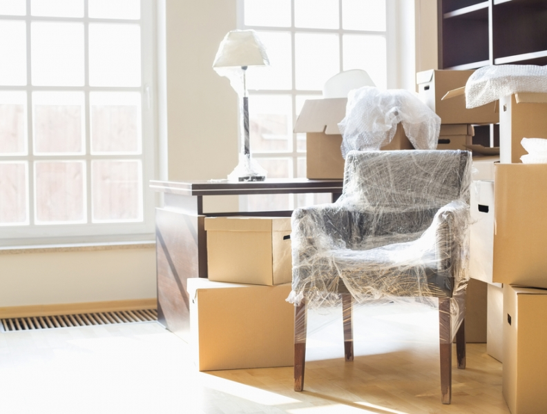

Pasos para protejer tus muebles para una mudanza
Siempre una mudanza es causa de estrés y desesperación, por eso, no queremos que tus muebles se estropeen, tenemos para ti estos 6 pasos que te ayudaran aprender el cómo proteger tus muebles en una mudanza:
Siempre una mudanza es causa de estrés y desesperación, por eso, no queremos que tus muebles se estropeen, tenemos para ti estos 6 pasos que te ayudaran aprender el cómo proteger tus muebles en una mudanza:
-
Paso 1: Envuelve los muebles
La preocupación más grande para todas las personas en una mudanza, es el cómo hacer para que NO se nos raye algún mueble, para evitarlo, envuelve los muebles con toallas o plástico de burbujas.
-
Paso 2: Guarda las piezas
Para evitar perder piezas de muebles desmontables, es recomendable guardar todas las piezas en un recipiente y colocarlas cerca del mueble al que le corresponde para localizarlas fácilmente.
-
Paso 3: Evita el desliz
En la mudanza es muy común que los cajones o puerta se deslicen, para evitarlo es recomendable, primero que nada, envolver la pieza en plástico y después cubrirlo con cinta o pegamento para sellar.
-
Paso 4: Plastifica objetos de tela
Los sofás, cojines y sillas, es recomendable envolverlos en plástico para evitar la suciedad, manchas o polvo. Si estos cuentan con ruedas o patas, es recomendable quitarlas y guardarlas en una bolsa aparte para evitar que se rayen o maltraten.
-
Paso 5: Protege los objetos de cristal
En el caso de los muebles con cristal o espejo, es necesario cubrirlos con cartón o plástico de burbujas por ambos lados, ya que si se golpean, estos harán que amortigüe el golpe
-
Paso 6: Identifica y protege objetos delicados
Es necesario identificar el contenido de cada caja o bolsa que este en la mudanza, de esta forma evitaras perder tiempo en el acomodo, también es importante escribir la palabra “Frágil” en los paquetes que contengan objetos delicados.
Con los pasos mencionados lograras tener una mudanza sin estrés, evitaras estropear objetos, muebles y cristales, y por ultimo sabrás identificar el lugar de cada objeto sin dificultades y sin tardanzas, estamos seguros que si sigues los pasos anteriores, mudarse no será un problema para ti.